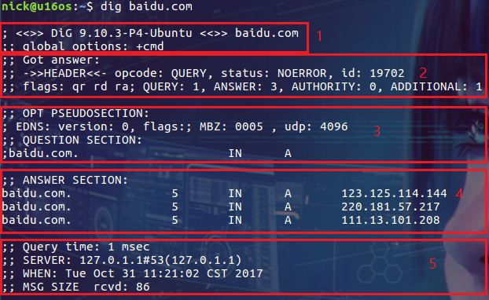

2024-09-23
dig
修改于: 2024-09-23参考: Linux dig
dig 命令用于通过域名查询主机IP信息
安装
# Debian或Ubuntu系统上使用apt-get命令：
$ sudo apt-get install dnsutils
# 在CentOS或RHEL系统上使用yum命令：
$ sudo yum install bind-utils
用例
普通查询
dig baidu.com
结果

dig 命令默认的输出信息比较丰富，大概可以分为 5 个部分。
- 第一部分显示 dig 命令的版本和输入的参数。
- 第二部分显示服务返回的一些技术详情，比较重要的是 status。如果 status 的值为 NOERROR 则说明本次查询成功结束。
- 第三部分中的 "QUESTION SECTION" 显示我们要查询的域名。
- 第四部分的 "ANSWER SECTION" 是查询到的结果。
- 第五部分则是本次查询的一些统计信息，比如用了多长时间，查询了哪个 DNS 服务器，在什么时间进行的查询等等。
默认情况下 dig 命令查询 A 记录，上图中显示的 A 即说明查询的记录类型为 A 记录。
CNAME查询
$ dig abc.filterinto.com CNAME
; <<>> DiG 9.10.6 <<>> abc.filterinto.com CNAME
;; global options: +cmd
;; Got answer:
;; ->>HEADER<<- opcode: QUERY, status: NXDOMAIN, id: 27014
;; flags: qr rd ra; QUERY: 1, ANSWER: 0, AUTHORITY: 1, ADDITIONAL: 0
;; QUESTION SECTION:
;abc.filterinto.com. IN CNAME
;; AUTHORITY SECTION:
com. 900 IN SOA a.gtld-servers.net. nstld.verisign-grs.com. 1727235157 1800 900 604800 86400
;; Query time: 728 msec
;; SERVER: 192.168.1.1#53(192.168.1.1)
;; WHEN: Wed Sep 25 11:32:55 CST 2024
;; MSG SIZE rcvd: 115
指定 DNS 服务器查询
$ dig @8.8.8.8 abc.filterinto.com
; <<>> DiG 9.10.6 <<>> @8.8.8.8 abc.filterinto.com
; (1 server found)
;; global options: +cmd
;; Got answer:
;; ->>HEADER<<- opcode: QUERY, status: NXDOMAIN, id: 49953
;; flags: qr rd ra; QUERY: 1, ANSWER: 0, AUTHORITY: 1, ADDITIONAL: 1
;; OPT PSEUDOSECTION:
; EDNS: version: 0, flags:; udp: 512
;; QUESTION SECTION:
;abc.filterinto.com. IN A
;; AUTHORITY SECTION:
com. 900 IN SOA a.gtld-servers.net. nstld.verisign-grs.com. 1727235217 1800 900 604800 86400
;; Query time: 92 msec
;; SERVER: 8.8.8.8#53(8.8.8.8)
;; WHEN: Wed Sep 25 11:34:02 CST 2024
;; MSG SIZE rcvd: 120
如果不指定 DNS 服务器，dig 会依次使用 /etc/resolv.conf 里的地址作为 DNS 服务器
反向查询IP对应域名
使用 dig 的 -x 选项来反向解析 IP 地址对应的域名
$ dig -x 8.8.8.8 +short
dns.google.
显示精简结果
dig 命令默认返回的结果展示详细的信息，如果要获得精简的结果可以使用 +short 选项
$ dig +short abc.filterinto.com
还可以通过更多选项来控制输出的内容，比如只想显示 "ANSWER SECTION" 的内容：
$ dig abc.filterinto.com +nocomments +noquestion +noauthority +noadditional +nostats
换一种优雅一些的方式来实现和上面相同的结果
$ dig abc.filterinto.com +noall +answer
查看 TTL(Time to Live)
TTL 是 DNS 解析中很重要的指标，主要是控制 DNS 记录在 DNS 服务器上的缓存时间
$ dig abc.filterinto.com
; <<>> DiG 9.10.6 <<>> abc.filterinto.com
;; global options: +cmd
;; Got answer:
;; ->>HEADER<<- opcode: QUERY, status: NXDOMAIN, id: 23586
;; flags: qr rd ra; QUERY: 1, ANSWER: 0, AUTHORITY: 1, ADDITIONAL: 1
;; OPT PSEUDOSECTION:
; EDNS: version: 0, flags:; udp: 1408
;; QUESTION SECTION:
;abc.filterinto.com. IN A
;; AUTHORITY SECTION:
com. 504 IN SOA a.gtld-servers.net. nstld.verisign-grs.com. 1727235157 1800 900 604800 86400
;; Query time: 92 msec
;; SERVER: 192.168.1.1#53(192.168.1.1)
;; WHEN: Wed Sep 25 11:38:34 CST 2024
;; MSG SIZE rcvd: 120
查询结果中的单位是秒。此处是 504 秒，也就是 8 分钟多一点
通过下面的命令可以显示精简一些结果
$ dig +nocmd +noall +answer +ttlid abc.filterinto.com
跟踪整个查询过程
使用 +trace 选项。它会输出从根域到最终结果的所有信息：
$ dig +trace abc.filterinto.com
常见的 DNS 记录类型
| 类型 | 目的 |
|---|---|
| A | 地址记录，用来指定域名的 IPv4 地址，如果需要将域名指向一个 IP 地址，就需要添加 A 记录。 |
| AAAA | 用来指定主机名(或域名)对应的 IPv6 地址记录。 |
| CNAME | 如果需要将域名指向另一个域名，再由另一个域名提供 ip 地址，就需要添加 CNAME 记录。 |
| MX | 如果需要设置邮箱，让邮箱能够收到邮件，需要添加 MX 记录。 |
| NS | 域名服务器记录，如果需要把子域名交给其他 DNS 服务器解析，就需要添加 NS 记录。 |
| SOA | SOA 这种记录是所有区域性文件中的强制性记录。它必须是一个文件中的第一个记录。 |
| TXT | 可以写任何东西，长度限制为 255。绝大多数的 TXT记录是用来做 SPF 记录(反垃圾邮件)。 |